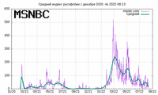
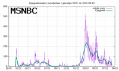
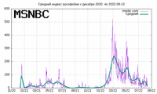
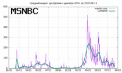

Индекс русофобии в США
Полная таблицa
Вашему вниманию предлагается индикатор "Индекса русофобии". Это автоматическая
система, ежедневно определяющая уровень русофобии по версии сайтов
cnn.com, foxnews.com, msnbc.com. Как определяется индекс?
Очень просто. Подсчитывается, сколько раз слово "Russia" присутствует на
главной странице. Это слово не обязательно видно на страничке. Оно может
использоваться в URL ссылок или в именах файлов и картинок.
Кроме того, определяется
суммарный индекс на основе этих трех. Статистика собирается с 12 декабря
2020 года и записывается в таблицу. См. выше.
А на картинке ниже приводится графическое отображение индекса за последние
две недели. Число в центре - средний рейтинг, удерживаемый
Россией в течение двух недель. Рейтинг 40 и более следует
считать высоким.
Рейтинги по сайтам
 

Сходный сервис Рейтинг Путина.
(c) *** JES 2022 *** Юрий
Шимановский
 а также композитор, естествоиспытатель и
некродизайнер
Назад|На главную
а также композитор, естествоиспытатель и
некродизайнер
Назад|На главную
 
